VISUAL DESIGN × ARTIFICIAL INTELLIGENCEPORTFOLIO — 2027
+
+
01 / SELECTED WORKIDEAS MADE TANGIBLE
把想象，变成作品。
从真实商业项目到个人实验，
让创意在不同媒介中生长。
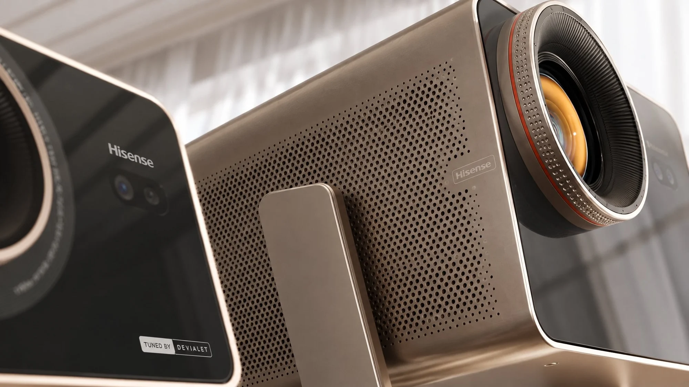
/01实习项目Hisense · C3 系列
海外产品宣传 / AI 内容制作
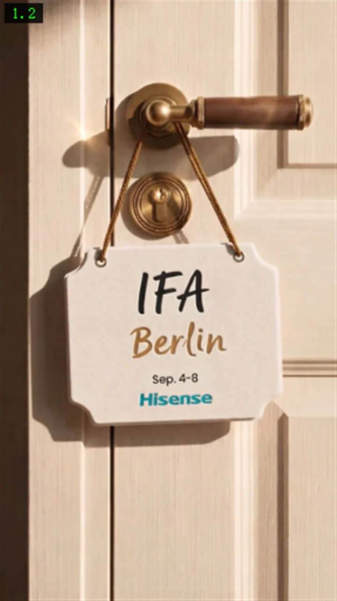
/02实习项目Hisense · IFA Berlin 2026
海外社媒短片 / 已发布于官方 TikTok
/03实习项目
Hisense · 种草店大屏
国庆与中秋 / 双档期大屏广告
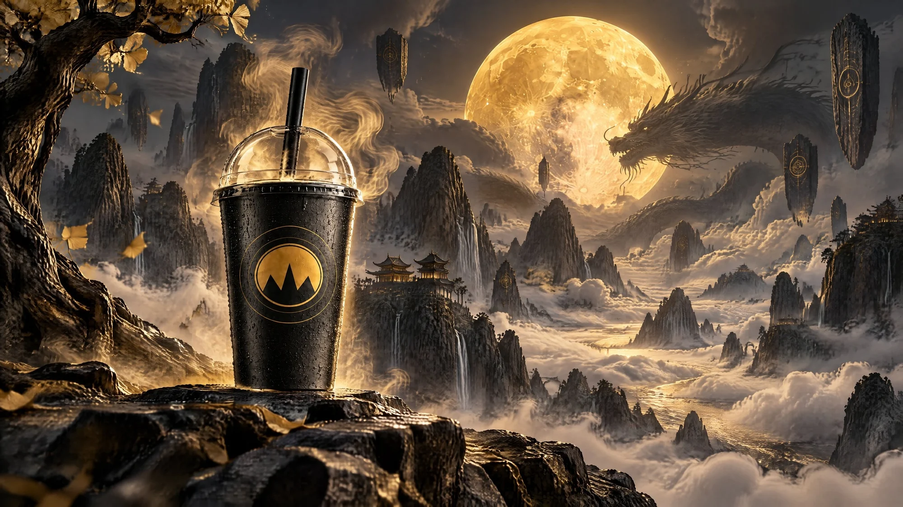
/04品牌全案山海志
东方奇幻叙事 × 新中式茶饮品牌
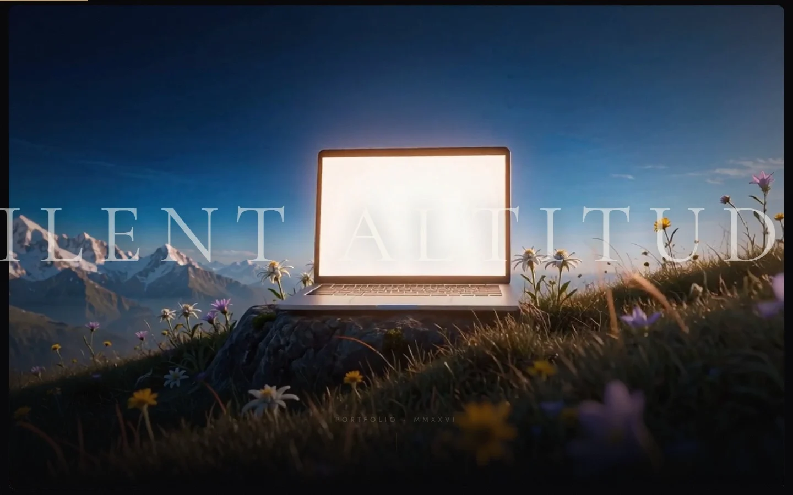
/05AI Coding静默海拔 SILENT ALTITUDE
AI Coding × 沉浸式网页体验
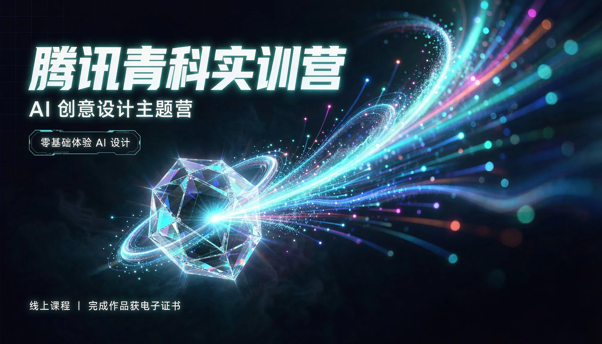
/06视觉设计AI 点亮创意棱镜
腾讯青科实训营 / 主视觉与动态延展
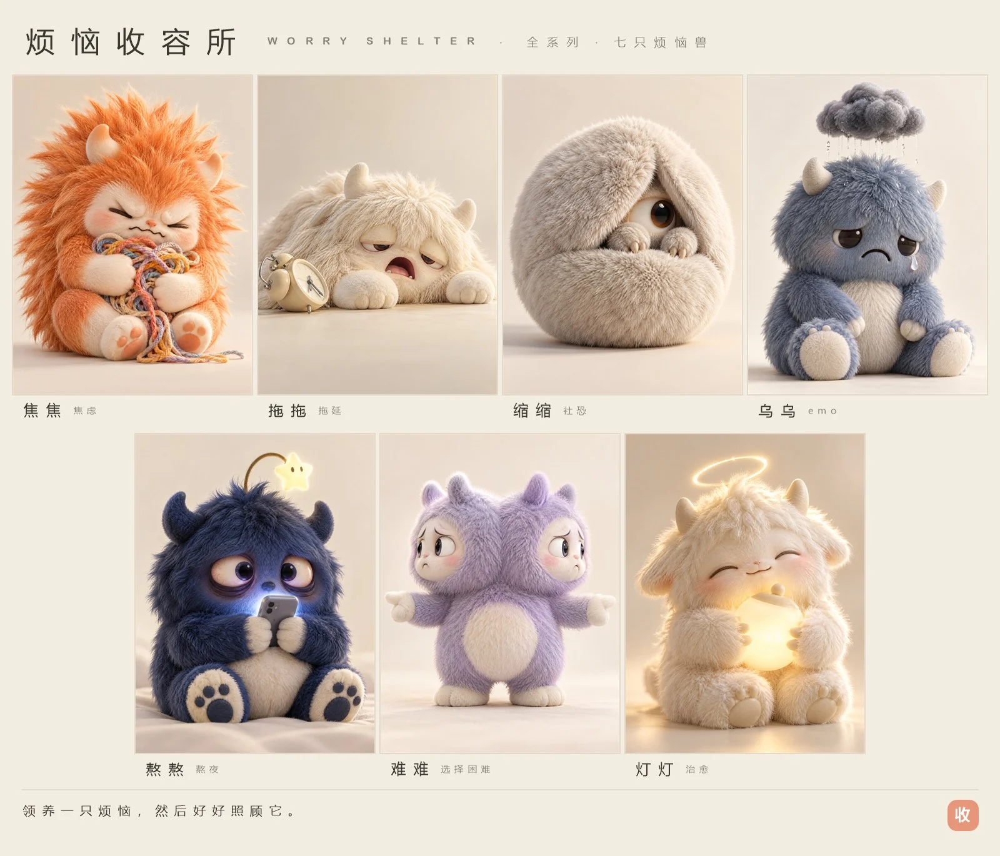
/07潮玩 IP烦恼收容所
让每一种情绪，都有容身之处
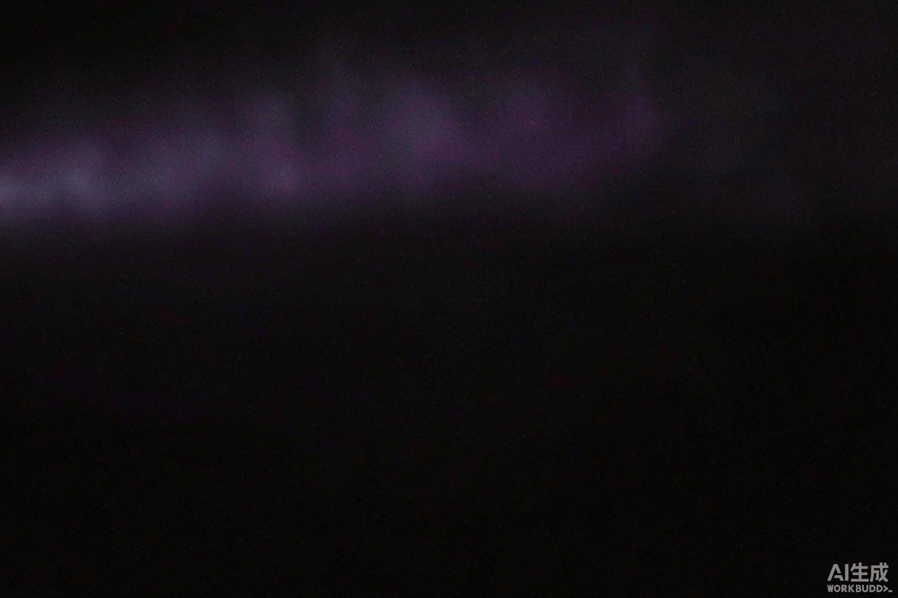
/08UI 设计为智能时代设计界面
灵屿 LingYu / 观星 Observe / Nebula
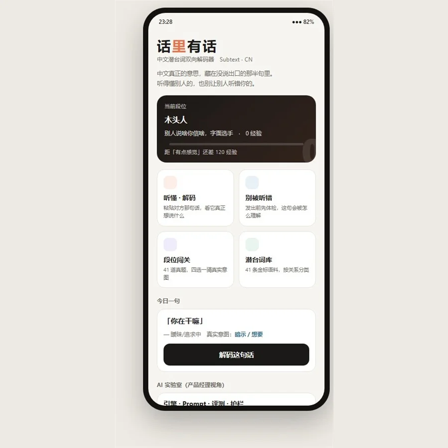
/09独立负责话里有话
中文潜台词双向解码器 / AI 产品
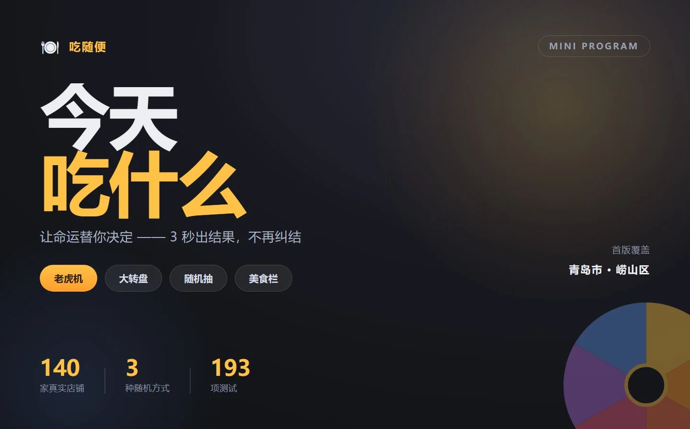
/10AI 应用吃随便
附近美食随机转盘 / 微信小程序
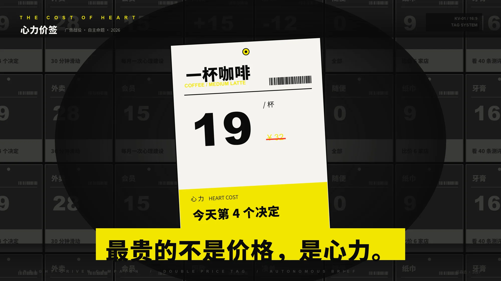
/11广告创意心力价签
给商品贴上第二种价签 / 广告战役
 /12品牌识别
/12品牌识别BLACK KING BAR
DOTA 2 假想战队 / 成套品牌识别
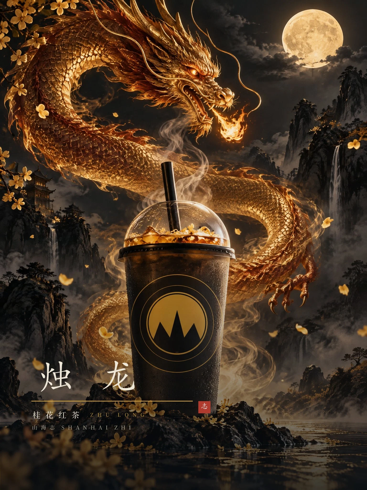
/13动态视觉山海志 · 动态演绎
从品牌视觉，到时间维度
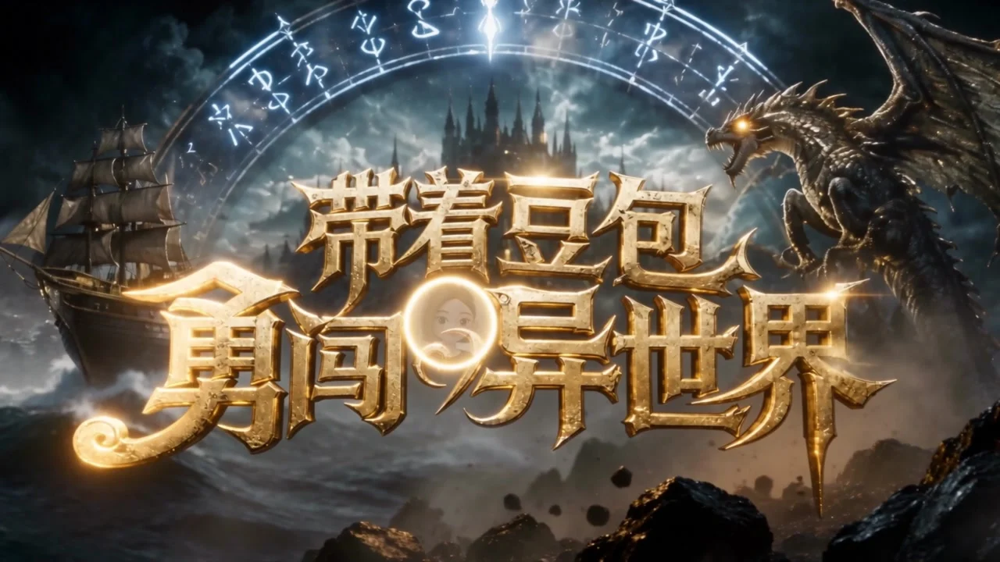
/14个人创作个人短片三则
混剪二创 / 奇幻题材 / 网络梗创作
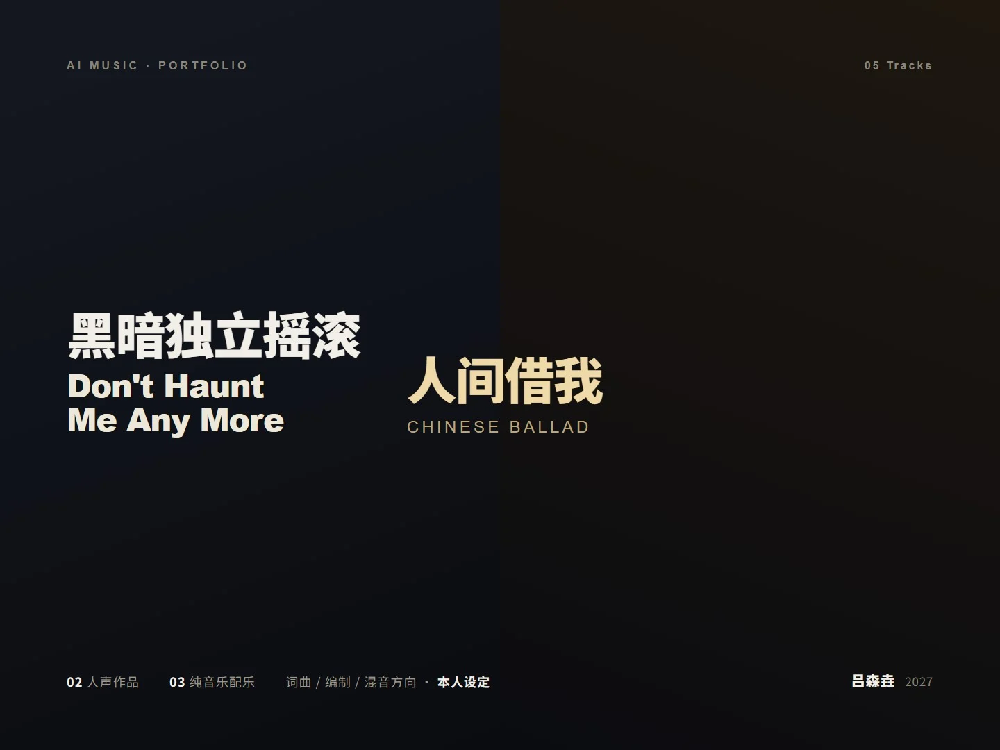
/15AI 音乐声音，也是一种想象
两首人声作品 + 三首毕业设计配乐
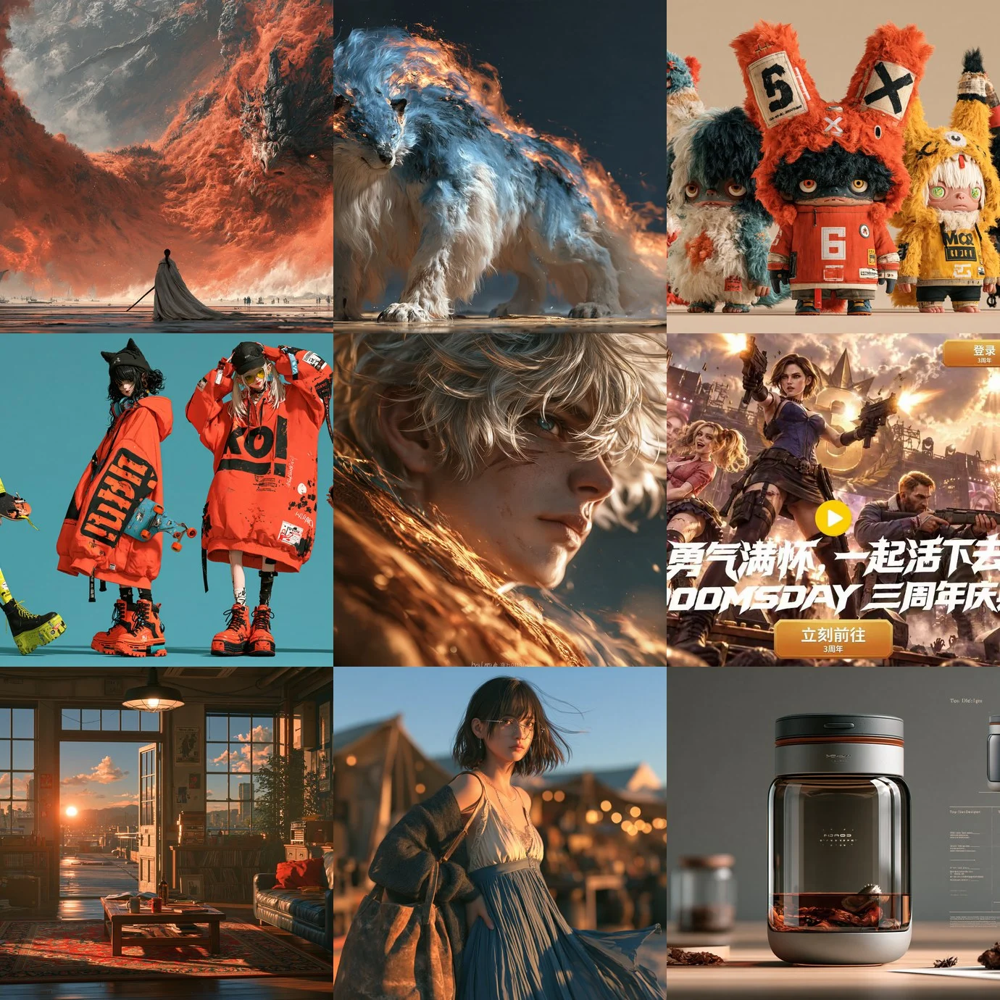
/16AI 视觉生成式视觉实验
58 张 AI 视觉素材 / 六个探索方向
02 / THE PLAYGROUNDSTAY CURIOUS. KEEP MAKING.
ONGOING EXPLORATION好奇心，
EXPERIMENT NO. 058VIEW ARCHIVE ↗好奇心，
没有边界。
把 AI 当作新的创作媒介。
从一个提示词、一段旋律，到一个完整的世界。
在实验中寻找意料之外的答案。
58 VISUALS / 06 DIRECTIONS
03 / THE PERSON BEHINDHUMAN FIRST, AI AUGMENTED.
吕森垚SENYAO LÜ
视觉设计师 · AI 创意探索者
CLASS OF 2027审美是判断力，
技术让想法走得更远。
就读于山西传媒学院。我关注视觉语言与新技术的交汇，用设计构建叙事，也用 AIGC 与 Agent 辅助工作流，把想法推进到可以被看见、被体验的作品。
01
视觉与品牌
品牌识别 / 主视觉 / 包装 / IP 体系
02
动态与叙事
商业短片 / 动态视觉 / AI 影像与音乐
03
数字与交互
界面设计 / AI 产品 / 创意网页